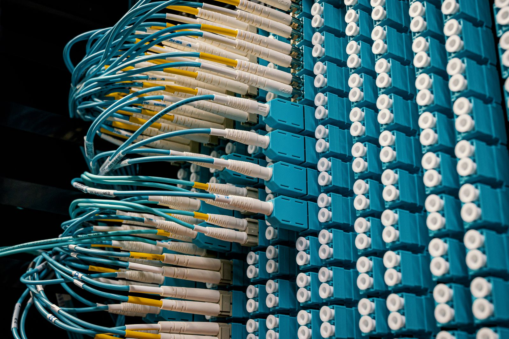

23
Link budgets written, in dB, before any hardware
Quantum link engineering · QKD links · Crypto-agility
Cipher Vault designs quantum key distribution links and crypto-agility programmes for banks, utilities and data-centre operators. Every figure the practice works to is printed — rates, losses, thresholds — because a link budget you cannot read is a promise you cannot check.
Standing note — read first
QKD is point-to-point physics with hard distance and rate limits. For most organisations the honest first move is a cryptographic inventory and a post-quantum migration plan — not a quantum link. We sell both, and the inventory comes first, even when it costs us the link sale.

r = 1 − 2·h(q), where h(q) = −q·log₂(q) − (1−q)·log₂(1−q) is the binary entropy of the quantum bit error rate.
This is the practice's stated Shor–Preskill-style rule of thumb, asymptotic limit, symmetric errors assumed. Finite-key effects lower real rates further — which is why acceptance on a built link is measured, not modelled (Case file CF-03). Step the QBER and watch the fraction fall; at q ≈ 11.0% it reaches zero, and a real link aborts.
Measured QBER — q
Steps of 0.5 points · range 0.5–15.0%
LINK STATE: PRODUCING KEY
The working, line by line
Printed link classes — sifted rate, before privacy amplification
Distance eats the sifted rate before QBER takes its share: the 78 km class starts with 2.4% of the 22 km class's raw material. Both taxes are printed; neither is negotiable.
INDICATIVE ONLY — sifted rates are printed per link class from the practice's measured engagements. Your fibre will differ; a link study (Register S.02) replaces these figures with your route's own. No figure on this sheet is a quote, a guarantee, or a vendor's “up to”.
Every key, certificate, protocol and library that touches your data — found, classified by harvest-now-decrypt-later exposure, and written down. Including the ones nobody remembers installing.
Route survey, loss budget in dB, source and detector selection, predicted QBER and key rate — printed and signed before any hardware is ordered.
Hybrid key exchange and ML-KEM migration on the systems the inventory flags, sequenced so nothing breaks in production — and reversible where it can be.
HSM topology, key ceremonies, rotation and escrow — designed so QKD keys and classical keys are run as one estate, not two religions.
Independent measurement of a built link against its budget: QBER, sifted and secret rates, sustained over an acceptance window — reported next to the prediction.
A payments processor needed key exchange between two sites that its auditors would sign. The vendor brochure promised “up to 1,000 kbit/s” — back-to-back, in a laboratory, over a patch cord. As installed on the real 22 km route, over a 30-day acceptance window: sifted 1,180 kbit/s, QBER 2.0%, secret key rate sustained at 846 kbit/s — exactly what Sheet K-1 predicts at q = 2.0% (r = 71.7%). The keys rekey AES-256 link encryptors; QKD supplies the keys, AES does the carrying.
“Cipher Vault's acceptance report is the first vendor document our auditors accepted without a follow-up question. The measured rate was in it, the brochure rate was in it, and the difference was explained in plain dB.”
| Service | Basis | Rate |
|---|---|---|
| Cryptographic inventory & exposure audit | per day | £1,350 |
| QKD link design & link budget | per day | £1,600 |
| Fibre-route survey & loss measurement | per study | £4,800 |
| Acceptance & assurance review | per review | £2,900 |
Rates are the ones printed in the fee table opposite — the estimator reads the same ledger. A scoped proposal is fixed-fee and in writing before work starts.
Not “quantum-proof”
No link makes an organisation quantum-proof. The phrase is refused here, in board papers and in proposals. What exists is a measured key rate on a stated span, and a migration plan for everything else.
Trusted nodes, printed
Beyond metropolitan distances, today's QKD relays keys through trusted nodes — each one must be physically guarded like a vault. Any diagram this practice draws shows them. Ask any vendor to show you theirs.
A link, not an organisation
QKD protects key exchange between two points. A compromised endpoint, a phished operator or an unpatched gateway stays compromised. That is what the inventory (S.01) is for.
Tell us what you are protecting, and between which two points.